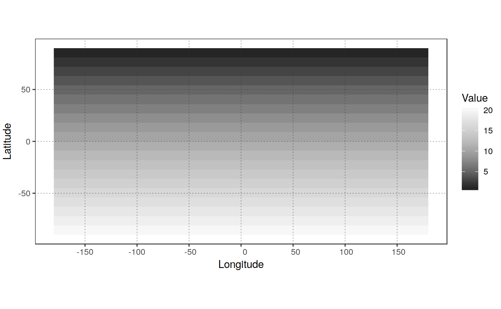
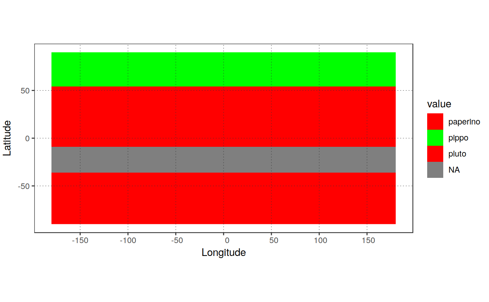

function to reclassify values of a raster object or raster file
based on a reclassification matrix which specifies which value in the output
should be taken by different intervals of values of the input raster
(simple wrapper for the raster::reclassify function, providing a (somehow)
easier and extended I/O functionality and possibility to set the class names
for the new raster using raster::ratify
recategorize_rast(in_rast, class_matrix, out_file = NULL, out_type = "rastobject", overwrite = FALSE, verbose = TRUE)
| in_rast | Input raster file or "R" raster layer to be reclassified |
|---|---|
| class_matrix |
|
| out_file |
|
| out_type |
|
| overwrite |
|
| verbose |
|
if out_type == rastobject: *raster corresponding to the reclassified raster
if out_type == "rastfile": name of the file where it was saved (either corresponding to
out_file or to the name of the temporary file created (if out_file == NULL))
class_matrix must be a 3-columns data.frame (or similar), including
the start, end, newand label columns. It can be easily created by, for example:
class_matrix <- tribble(~start, ~end, ~new, ~label
0, 1, NA, NA # values >=0 and < 1 will be set to NA
1, 5, 1, "Class_1", # values >=1 and < 5 will be set to 1
5, 7, 2, "Class_2", # values >=5 and < 7 will be set to 2
..., ..., ..., ...,
..., ..., ..., ...,
11, 100, NA, NA) # values >=11 and < 100 will be set to NA
, or:
class_matrix <- data.frame(start = c(0, 1, 5, ..., ..., 11),
end = c(1, 5, 7, ..., ..., 100),
new = c(NA, 1, 2, ..., ..., NA),
label = c(NA, "Class_1", "Class_2", ..., ..., NA)
)
Note that it is FUNDAMENTAL for proper functioning that ALL values of the
original raster are "covered" in class_matrix. Values not falling in any
of the intervals will be kept at their original values ! (checks for this
will be implemented in the future!)
raster::reclassify raster::ratify set_rastlabels
# create a raster with values equal to rows number and assign a RAT # to it library(magrittr) in_rast <- raster::raster(ncol = 20, nrow = 20) %>% raster::init("row") plot_rast_gg(in_rast, rast_type = "continuous", scalebar = FALSE, direction = -1)# build a reclassification matrix class_matrix <- tibble::tribble( ~start, ~end, ~new, ~label, ~color, -Inf, 5, 1, "pippo", "red", # Values < 5 --> 1 5, 8, 2, "pluto", "green",# >=5 and < 8 --> 2 8, 12, 2, "pluto", "green",# >=8 and < 12 --> 2 12, 15, NA, NA, NA,#>=12 and < 15 --> NA 15, Inf, 3, "paperino", "red")# Values >=15 --> 3 # reclassify and assign class names out_rast <- recategorize_rast(in_rast, class_matrix)#>out_rast#> class : RasterLayer #> dimensions : 20, 20, 400 (nrow, ncol, ncell) #> resolution : 18, 9 (x, y) #> extent : -180, 180, -90, 90 (xmin, xmax, ymin, ymax) #> coord. ref. : +proj=longlat +datum=WGS84 +no_defs +ellps=WGS84 +towgs84=0,0,0 #> data source : /tmp/RtmpI5PrYC/file67484449c1d0.tif #> names : file67484449c1d0 #> values : 1, 3 (min, max) #> attributes : #> ID Class Color #> 1 pippo red #> 2 pluto green #> 3 paperino red #># reclassify a land cover map with N classes to a 0-1 mask, retaining classes 5 # and 9, putting the rest to 0 and values >= 11 to NA # Open the masking file # in_mask <- raster(in_maskfile) # setup the reclassification matrix # class_matrix <- tibble::tribble( # ~start, ~end, ~new, ~label, ~color, # 0, 0, NA, NA, NA, # 1, 5, 0, NA, "black", # 5, 6, 1, NA, "white", # 6, 9, 1, NA, "white", # 9, 11, 1, NA, "white", # 11, 100, NA, NA, NA) # reclass_file = "/home/lb/Temp/buttami/pippo_reclass.tif" # outmask = categorize_rast(in_rast, # class_matrix, # r_out = TRUE) # plot_rast_gg(outmask)